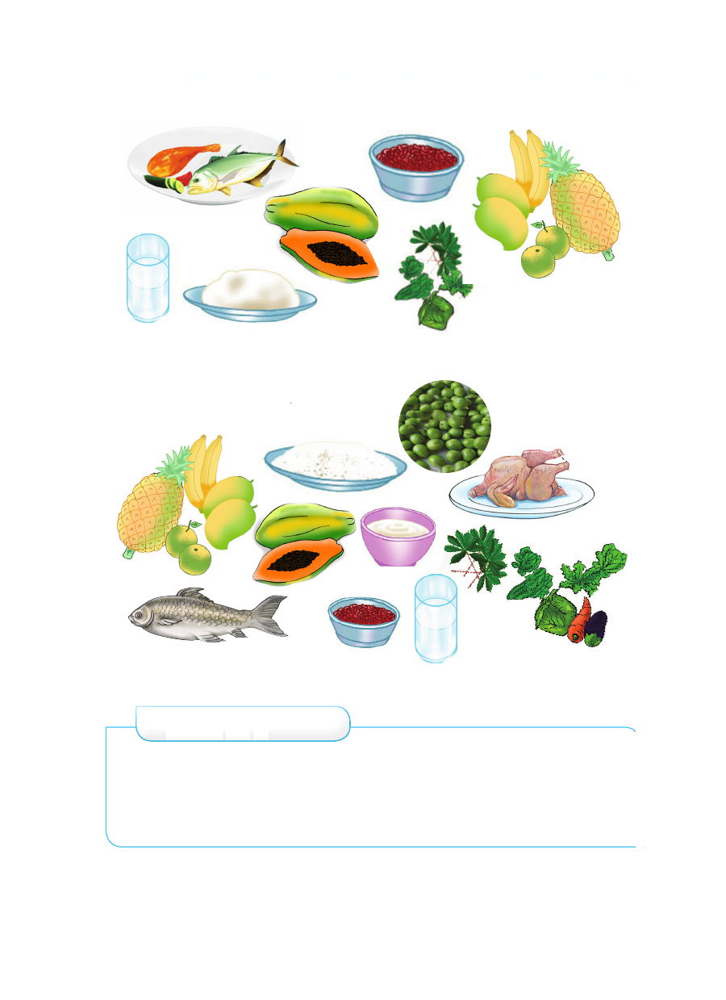

Vyakula vinavyoliwa mchana
Vyakula vinavyoliwa jioni
Zoezi la 1
1. Taja vyakula unavyokula asubuhi, mchana na jioni.
2. Eleza ni kwa nini tunakula chakula.
3. Chora vyakula unavyopenda kula.
Vyakula vinavyoliwa mchana Vyakula vinavyoliwa jioni Zoezi la 1 1. Taja vyakula unavyokula asubuhi, mchana na jioni. 2. Eleza ni kwa nini tunakula chakula. 3. Chora vyakula unavyopenda kula.